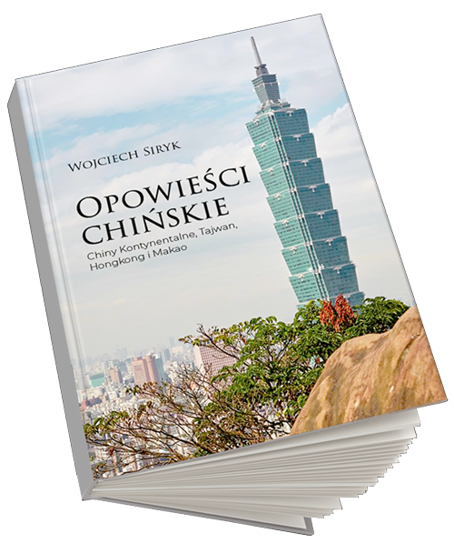
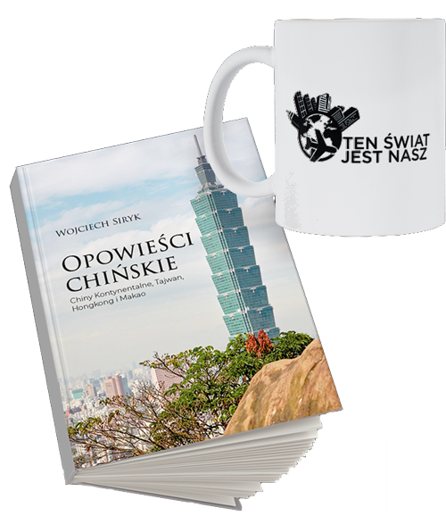
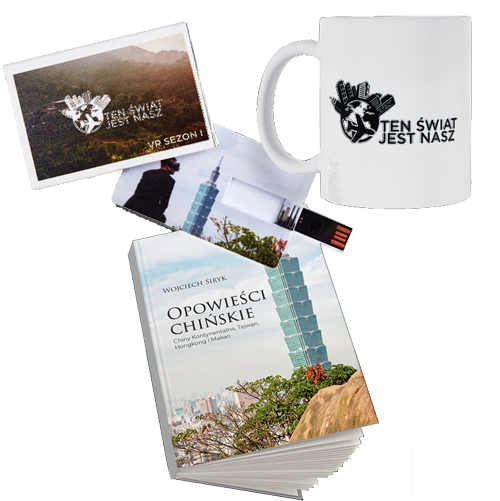

x
Produkt
Cena
Ilość
Kwota
Wojciech Siryk prezentuje swoją pierwsza książkę podróżnicza pt.
Chiny Kontynentalne, Tajwan, Hongkong i Makao
„Opowieści Chińskie” to zapis moich podróży po niezwykle intrygującym, chińskim świecie. W trakcie realizacji programu „Ten Świat Jest Nasz” udało mi się dotrzeć do wielu fascynujących miejsc. Dzięki wyjątkowym osobom, które tam poznałem oraz ich wsparciu dla mojej dziennikarskiej misji – zdołałem zobaczyć i poznać nie tyle tajemniczy, co wręcz nieznany świat.
Książka przypadnie do gustu zarówno osobom zainteresowanym polityką i gospodarką, jak i miłośnikom podróży. Lekka forma sprawi, że „Opowieści Chińskie” dla tych pierwszych będą przyjemną odskocznią od znacznie cięższych tematów, a dla drugich przystępnym wprowadzeniem w zawiłości współczesnego, chińskiego świata.
Pakiet nr 1
49.99
Pakiet nr 2
69.99
Pakiet nr 3
149.99